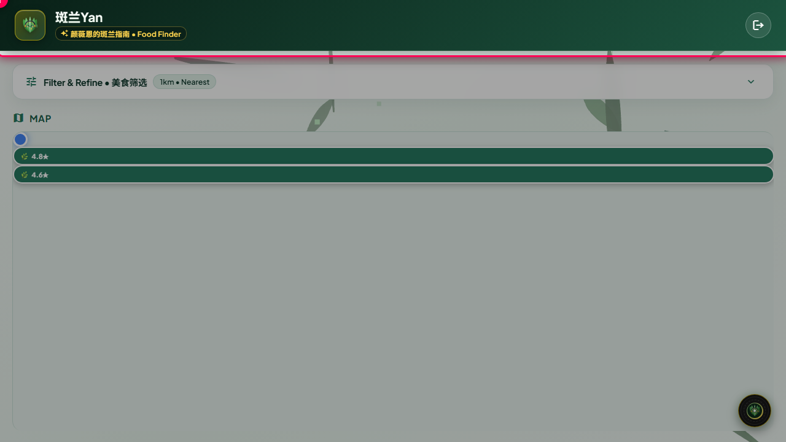
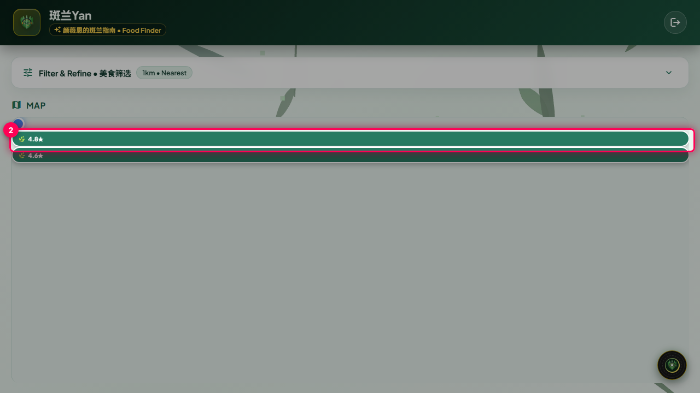
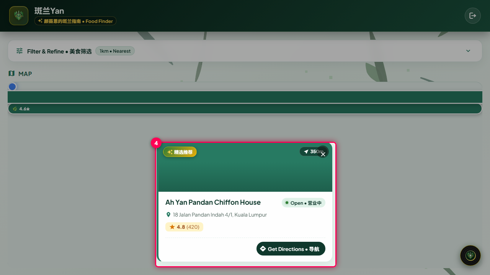
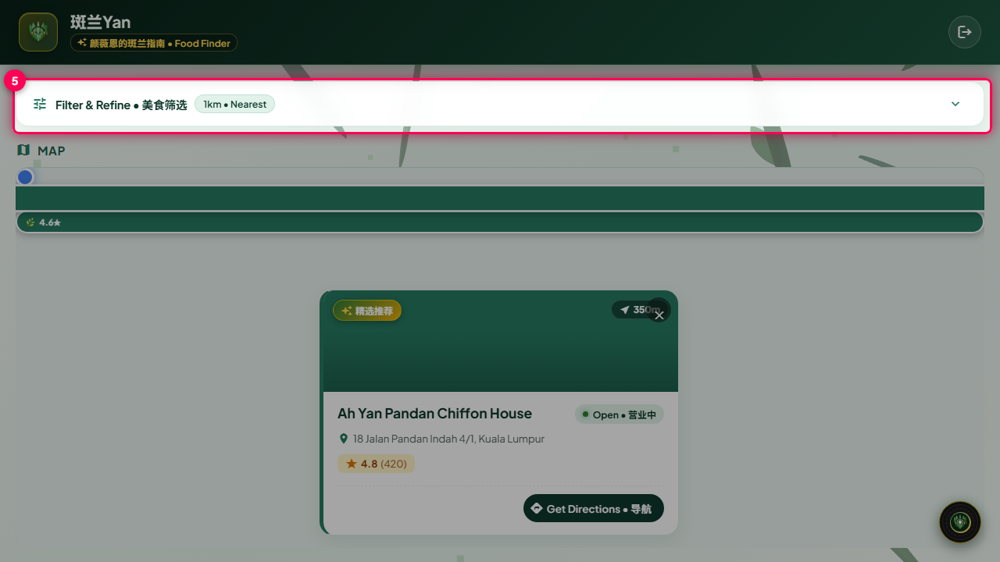

Discovering Nearby Pandan Food & Bakeries
Learn how to explore nearby Pandan chiffon cakes, kuih, and local bakeries with real-time distance and interactive map.
Prerequisites
- Browser location permission is granted.
- Authenticated using preset access credentials.
Open Pandan Discovery Dashboard
Launch the application in your browser. The system will detect your location and initialize the interactive food map.
The hero header, 3D leaf backdrop, and interactive map container are displayed.
Ensure your device location services are turned on for accurate geodesic distance calculations.

Explore Nearby Pandan Pins on Map
Scan the interactive Google Map to view pins indicating verified Pandan culinary locations within walking distance.
Map markers display rating badges (e.g. 4.8★) positioned at exact geodesic coordinates.
Each marker is filtered to exclude non-food businesses in townships named Pandan.

Select a Spot for Detailed Information
Click any green Pandan pin on the map to bring up the establishment card overlay.
A floating card displays the food spot name, star rating, address, opening hours, and distance.
Review Spot Details & Opening Hours
Inspect the specialty highlights, rating badge, address, and live open status.
Detailed info confirms business name, photo preview, and open status.
The badge tags top-tier chiffon cakes, authentic kuih, and waffles.

Filter by Distance Radius and Rating
Use the filter panel to select maximum walking distance (e.g., 1km, 3km, 5km) or filter by minimum rating.
The map dynamically adjusts pins matching the updated filter preferences.

Troubleshooting & Common Scenarios
| Scenario | Message Displayed | Resolution |
|---|---|---|
| No Pandan Spots Visible within 1km | No authentic Pandan spots found nearby |
Expand search radius to 3km or 5km using the filter panel, or click "Try Again" after granting location permission. |